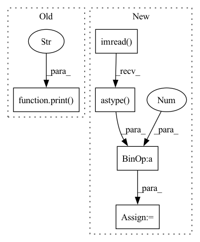

Pattern ID :6048

Before Change
print("Build RRDBNet model successfully.")
// Load the super-resolution model weights
print(f"Load RRDBNet model weights `{os.path.abspath(config.model_path)}`...")
state_dict = torch.load(config.model_path, map_location=config.device)
model.load_state_dict(state_dict)
print(f"Load RRDBNet model weights `{os.path.abspath(config.model_path)}` successfully.")
After Change
print(f"Processing `{os.path.abspath(hr_image_path)}`...")
// Read LR image and HR image
lr_image = cv2.imread(lr_image_path, cv2.IMREAD_UNCHANGED).astype(np.float32) / 255.0
hr_image = cv2.imread(hr_image_path, cv2.IMREAD_UNCHANGED).astype(np.float32) / 255.0
// Convert BGR image to Y image
hr_y_image = imgproc.bgr2ycbcr(hr_image, use_y_channel=True)
// Convert BGR image to RGB image
lr_image = cv2.cvtColor(lr_image, cv2.COLOR_BGR2RGB)
// Convert Y image data convert to Y tensor data
lr_tensor = imgproc.image2tensor(lr_image, range_norm=False, half=True).to(config.device).unsqueeze_(0)
In pattern: SUPERPATTERN
Frequency: 3
Non-data size: 5
Instances
Fragment ID: 21053767
Project Name: lornatang/esrgan-pytorch
Commit Name: 087e0c9bc621989889918b52b7c0dba9485c5fd6
Time: 2022-03-06
Author: liuchangyu1111@gmail.com
File Name: validate.py
M Class Name: AnonimousClass
N Class Name: AnonimousClass
M Method Name: main(0)
N Method Name: main(0)
M Parent Class:
N Parent Class:
M File Name: validate.py
N File Name: validate.py
M Start Line: 28
M End Line: 82
N Start Line: 30
N End Line: 91
'>
Before Change
print("Build SRGAN model successfully.")
// Load the super-resolution model weights
print(f"Load SRGAN model weights `{os.path.abspath(config.model_path)}`...")
state_dict = torch.load(config.model_path, map_location=config.device)
model.load_state_dict(state_dict)
print(f"Load SRGAN model weights `{os.path.abspath(config.model_path)}` successfully.")
After Change
print(f"Processing `{os.path.abspath(hr_image_path)}`...")
// Read LR image and HR image
lr_image = cv2.imread(lr_image_path, cv2.IMREAD_UNCHANGED).astype(np.float32) / 255.0
hr_image = cv2.imread(hr_image_path, cv2.IMREAD_UNCHANGED).astype(np.float32) / 255.0
// Convert BGR image to Y image
hr_y_image = imgproc.bgr2ycbcr(hr_image, use_y_channel=True)
// Convert BGR image to RGB image
lr_image = cv2.cvtColor(lr_image, cv2.COLOR_BGR2RGB)
'>
Fragment ID: 21053769
Project Name: lornatang/srgan-pytorch
Commit Name: 231bd74d21d7f532fd746f4a1cb8fb3bc008c933
Time: 2022-03-03
Author: liuchangyu1111@gmail.com
File Name: validate.py
M Class Name: AnonimousClass
N Class Name: AnonimousClass
M Method Name: main(0)
N Method Name: main(0)
M Parent Class:
N Parent Class:
M File Name: validate.py
N File Name: validate.py
M Start Line: 28
M End Line: 82
N Start Line: 33
N End Line: 91
'>
Before Change
print("Build SRCNN model successfully.")
// Load the super-resolution model weights
print(f"Load SRCNN model weights `{os.path.abspath(config.model_path)}`...")
checkpoint = torch.load(config.model_path, map_location=lambda storage, loc: storage)
model.load_state_dict(checkpoint["state_dict"])
print(f"Load SRCNN model weights `{os.path.abspath(config.model_path)}` successfully.")
After Change
print(f"Processing `{os.path.abspath(lr_image_path)}`...")
// Make low-resolution image
lr_image = cv2.imread(lr_image_path).astype(np.float32) / 255.0
lr_image_height, lr_image_width = lr_image.shape[:2]
lr_image_height_remainder = lr_image_height % config.upscale_factor
lr_image_width_remainder = lr_image_width % config.upscale_factor
lr_image = lr_image[:lr_image_height - lr_image_height_remainder, :lr_image_width - lr_image_width_remainder, ...]
lr_image = imgproc.imresize(lr_image, 1 / config.upscale_factor)
lr_image = imgproc.imresize(lr_image, config.upscale_factor)
'>
Fragment ID: 21053773
Project Name: lornatang/srcnn-pytorch
Commit Name: 919c5e6f1c9d9f4b355873199e155b50b2f04104
Time: 2022-03-17
Author: liuchangyu1111@gmail.com
File Name: validate.py
M Class Name: AnonimousClass
N Class Name: AnonimousClass
M Method Name: main(0)
N Method Name: main(0)
M Parent Class:
N Parent Class:
M File Name: validate.py
N File Name: validate.py
M Start Line: 29
M End Line: 70
N Start Line: 51
N End Line: 75